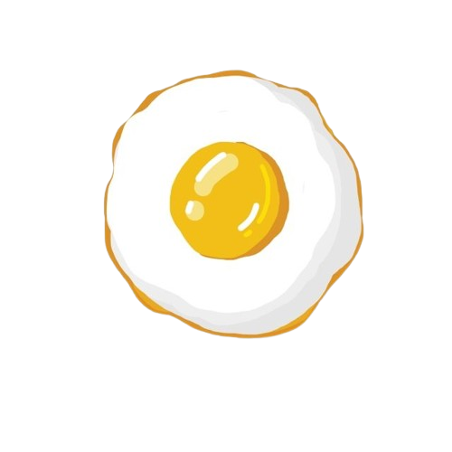

Heat the Pan
Place a non-stick frying pan over medium heat. Add a small
amount of butter or oil to coat the bottom of the pan.
Mix the Eggs with Condiments
Crack the egg(s) into a small bowl. Add a pinch of salt and
pepper. If using any additional herbs or spices, add them now.
Gently mix.
Start Frying
Once the pan is hot, carefully pour the egg mixture into the
pan. Cook until the white is set and the yolk reaches your
desired consistency (about 2-3 minutes for over-easy, 3-4
minutes for over-medium).

Serve and Enjoy
Carefully slide the egg onto a plate. Serve immediately with
toast, bacon, or your preferred sides.